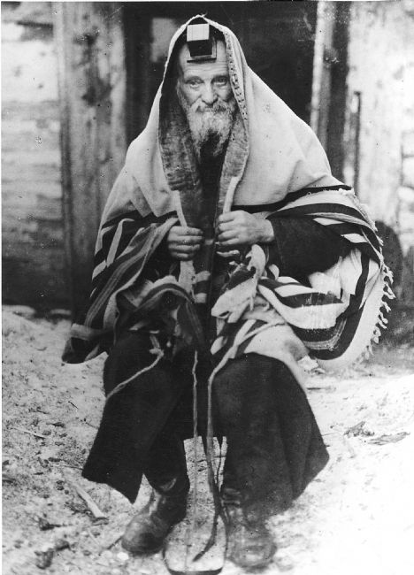

בלילות הקפואים של המחנה, קבוצת יהודים חופרת בשקט מחסן נסתר מאחורי קיר רקוב.
למרות הרעב והפחד, כל אחד מהם מוסר משהו יקר: טלית בלויה, ספר תהילים שחוק, גפרור אחרון.
בחשכת האפר הם מקימים מקדש קטן של תקווה – תפילה חרישית מול עולם שהשתתק.
image
image
audio
location

יהודי עטוף בטלית
ספר תהילים בלוי
בשנת 1944, בלב אחד ממחנות העבודה הנידחים בפולין, נרקמה יוזמה חרישית של קבוצת אסירים יהודים דתיים. בין ייאוש
לרעב, בין אפלה לגדרות תיל, הם החליטו שלא לוותר – לא רק על החיים, אלא גם על הרוח. מתוך ההבנה שאין להם שליטה
על גופם, אבל נשמתם חופשית, נולדה ההחלטה האמיצה: להקים מקום לתפילה.
לא הייתה זו החלטה פשוטה. בכל פינה ארבו עונש, הלשנה, או גרוע מכך. אך בחסות החשיכה, כששומרי הלילה התעייפו, הם
חפרו אט־אט מחסן נסתר מאחורי קיר רקוב של סככת כלים. בלי תוכנית אדריכלית, בלי כלים מתקדמים – רק כפיות חלודות,
שברי קרשים, ואמונה.
כל אחד תרם משהו: טלית בלויה שנשמרה בצמוד לגוף, ספר תהילים שדפיו נקרעו אך פסוקיו חרוטים בלב, גפרור בודד ששמור
היה לרגע קדושה. במאמץ משותף, הם הפכו את המחסן לפינה של אור – אור שלא נמדד בלומנים, אלא בכוחו לעורר תקווה.
יוזמה זו, על אף שנשמרה בסוד גמור, חדרה ללבבות. היא הוכיחה שיש מקומות בתודעה שאינם כבולים לגדרות – מרחבים בהם
יהודי יכול עדיין לעמוד מול קונו וללחוש "שמע ישראל" גם כשאין קול ואין עונה.
התחלה זו הייתה הצעד הראשון בסיפורם. מקום קטן, מחתרתי, פשוט — אך מלא הוד קדושה. לא מקדש פאר, אלא תזכורת אילמת
לעולם שלפני, ותקווה לעולם שלאחר.